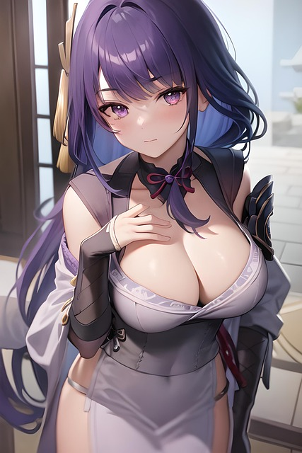

Kujou Sara. Leader of the Tenryou Commission and loyal general of the Raiden Shogun.
Kujou Sara. Leader of the Tenryou Commission and loyal general of the Raiden Shogun.

Raiden Shogun. The current archon of Inazuma. Has fought wars to keep her land safe and is striving to take Inazuma to eternity.
 Yae Miko. Head Priestess of the Grand Narukami Shrine and a childhood friend of the Raiden Shogun.
Yae Miko. Head Priestess of the Grand Narukami Shrine and a childhood friend of the Raiden Shogun.
Paimon. The traveller's flying companion. Best guide in all of Teyvat.
The world remains constant over the centuries. But human life is like the dew at dawn or a bubble rising through water. Transitory.-Raiden Shogun
Call to action! It's time!
Sign up for our product by clicking that button over there!